Convert AC to DC#
Author Information Name: Fateme Arabkhani Affiliation: Department of Computer Engineering, Ferdowsi University of Mashhad Contact: fatemearabkhani2005@gmail.com
Chapter 1: Introduction#
Definition and Importance of AC to DC Converters#
AC to DC converters, also known as rectifiers, are electronic devices that convert alternating current (AC) into direct current (DC). This conversion is crucial in many electrical and electronic systems since most modern devices, such as computers, smartphones, and industrial equipment, operate on DC power. The significance of AC to DC converters extends beyond small consumer electronics to large-scale applications, including renewable energy systems, power supplies, electric vehicles, and telecommunication infrastructures.
Various Applications in Industry and Daily Life#
The demand for AC to DC conversion spans across multiple fields:
Consumer Electronics: Devices such as laptops, smartphones, and LED televisions require DC power from an AC power source.
Industrial Automation: Machines and robotics in manufacturing plants use rectifiers to power motor drives and control circuits.
Renewable Energy Systems: Photovoltaic (PV) systems and wind turbines often integrate AC to DC converters to store and regulate power efficiently.
Electric Vehicles (EVs): Charging stations and onboard power conversion in EVs rely on AC to DC conversion.
Telecommunications: Power supplies for network infrastructure depend on stable DC voltage.
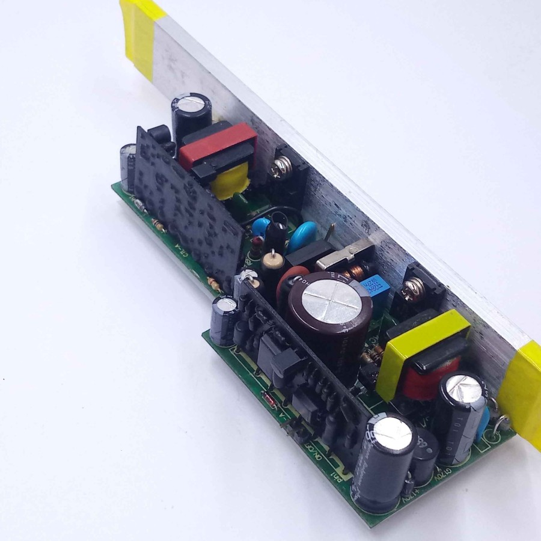 |
Structure of the Research#
This research is structured as follows:
Chapter 2 contains fundamental concepts of AC and DC power, including mathematical and physical principles
Chapter discusses the main components used in rectifier circuits
Chapter categorizes different types of AC to DC converters, comparing their characteristics
Chapter 5 explores the design and simulation of AC to DC converters using software tools
Chapter 6 highlights industrial applications and technological advancements
Chapter 7 examines challenges such as harmonic distortion, heat dissipation, and design complexity
Chapter 8 conclusion
Chapter 2: Fundamental Concepts of AC and DC Power#
Understanding the fundamental concepts of alternating current (AC) and direct current (DC) power is essential for analyzing and designing electrical and electronic systems. This chapter explores the physical and mathematical principles behind AC and DC power, forming a scientific foundation for the study of AC to DC converters.
Definition of Electrical Power
Electrical power is the rate at which energy is transferred over time, and it is measured in watts (W). The general formula for power is:
thet :
\(P\) : Electrical power (watts)
\(V\) : Voltage (volts)
\(I\) : Current (amperes)
Direct Current (DC)
In DC systems, the voltage and current remain constant over time. DC power is typically supplied by sources such as batteries and DC power supplies. A key characteristic of DC is that it delivers energy in a continuous and unidirectional flow.
Alternating Current (AC)
In contrast to DC, AC systems feature voltage and current that vary periodically, usually in the form of a sinusoidal waveform. AC power is widely used in power systems, especially in utility grids. AC voltages are commonly generated at standard frequencies such as 50 Hz or 60 Hz.
The mathematical form of AC voltage and current is:
Where:
\(𝐼_{𝑚𝑎𝑥}\) and \(V_{max}\) : Peak voltage and current
\(𝜔\) : Angular frequency (radians per second)
\( ϕ \) and \( 𝜃\) : Initial phase angles
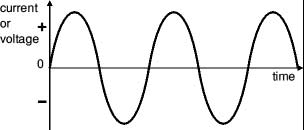 |
Instantaneous, Average, and RMS Power in AC
In AC systems, power is described in three forms:
1.Instantaneous Power:
\(p(t)=v(t)×i(t)\)
2.Average Power:
This is the mean value of power over a full cycle and is used in practical power calculations.
3.Root Mean Square (RMS) Values:
RMS values provide a DC-equivalent measure for voltage or current, reflecting their thermal effect:
Comparison of AC and DC
Feature |
DC |
AC |
|---|---|---|
Current Direction |
Constant |
Alternating |
Time Variation |
None |
Present (Periodic) |
Applications |
Batteries, DC power supplies |
Power grid, AC motors |
Power Transmission |
Suitable for short distances |
Efficient for long-distance use |
Such converters must transform alternating power into usable direct power efficiently and reliably, with minimal energy loss and waveform distortion.
Chapter 3: discusses the main components used in rectifier circuits#
1. Transformer
Function: Steps up or steps down the AC voltage to match the needs of the circuit
Working Principle:
Uses electromagnetic induction to change voltage without altering the frequency
Often includes a center tap in full-wave rectifiers to allow more efficient conversion
Benefits: Electrical isolation from the power source
Voltage adaptation for safety and compatibility
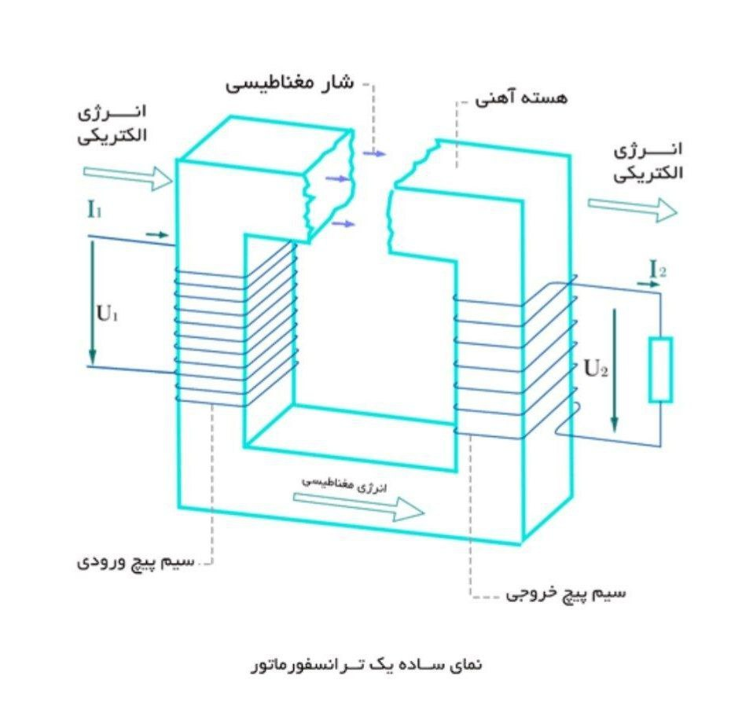 |
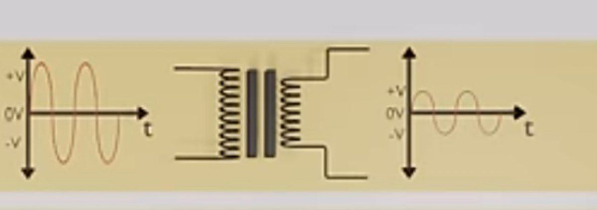 |
2. Rectifier Circuit
Function:
Converts AC voltage to pulsating DC voltage
Common Components:
Diodes for uncontrolled rectification
SCRs (Thyristors) or other controlled switches for adjustable output
Typical Types:
Half-Wave Rectifier: Uses only one half-cycle of AC; simple but inefficient
Full-Wave Rectifier (Center Tap or Bridge): Uses both half-cycles for higher efficiency and lower ripple
Notes:
A diode bridge uses four diodes
In controlled rectifiers, firing angle can be adjusted to regulate output voltage
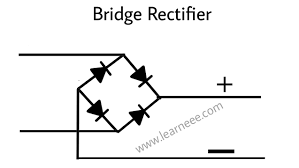 |
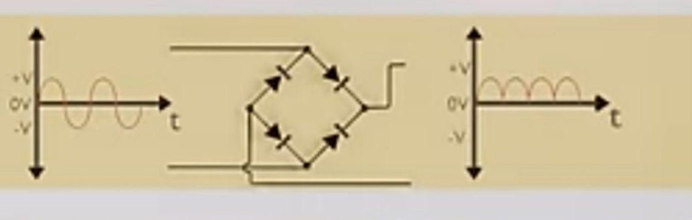 |
3. Filter (Capacitor / Inductor)
Function: Smooths out fluctuations (ripple) in the rectified DC signal
Main Filtering Components:
Capacitor: Role: Stores and releases charge to fill voltage gaps
Effect: Significantly reduces voltage ripple
Placement: Connected in parallel with the load
Inductor: Role: Resists rapid changes in current
Effect: Smooths the DC current flow
Placement: Typically in series with the load or part of LC/π filters
Combo: Using both capacitor and inductor in LC or π-filter configurations results in better DC quality
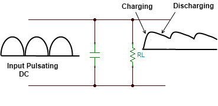 |
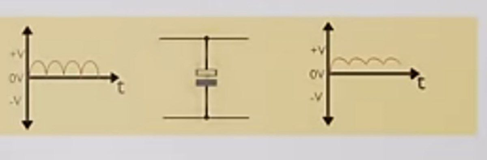 |
4. Voltage Regulator
Role:
Stabilizes the output DC voltage to protect the load and reduce residual fluctuations.
Application: After filtering, the voltage may still fluctuate slightly or be slightly higher than required. Regulators (such as 7805 for 5V, 7812 for 12V, etc.) are responsible for keeping the DC output at a certain and stable value. In more complex systems, switching regulators are also used.
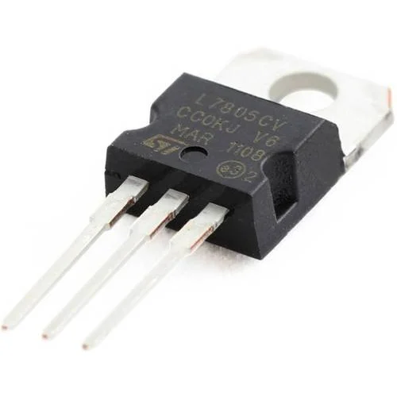 |
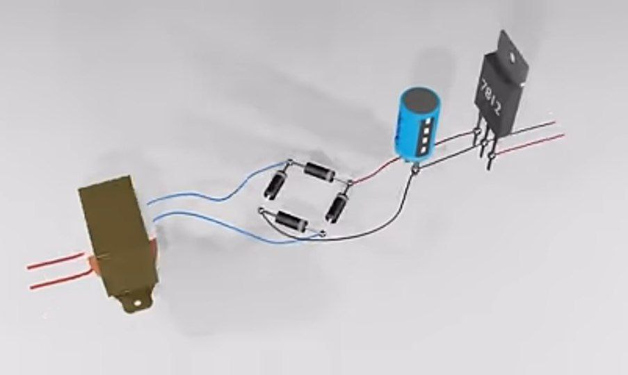 |
Chapter 4 : Categorization of AC to DC Converters and Comparison of Their Characteristics#
AC to DC converters, also known as rectifiers, are essential components in power electronics. Their main function is to convert alternating current (AC) into direct current (DC). These converters are widely used in power supplies, battery chargers, industrial devices, and electronic systems. In this chapter, we will introduce different types of rectifiers and compare their features.
General Classification of AC to DC Converters#
AC to DC converters can be classified based on structure, control type, and number of phases:
By Structure:
Half-wave rectifier
Full-wave rectifier
By Control Method:
Uncontrolled rectifier
Controlled rectifier
By Number of Phases:
Single-phase
Three-phase
Half-Wave Rectifier#
This type of rectifier allows only the positive half-cycle of the AC waveform to pass and blocks the negative half. It typically uses a single diode.
Advantages:
Simple and inexpensive
Suitable for low-power applications
Disadvantages:
Low efficiency
High ripple in the output voltage
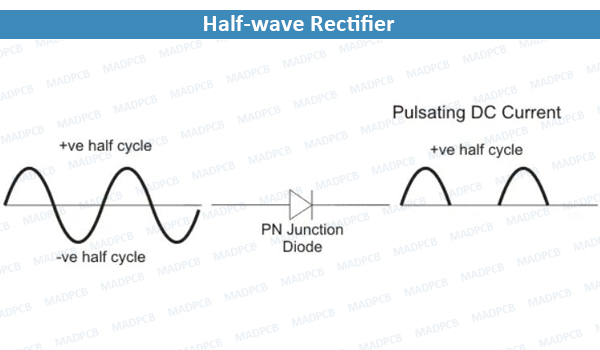 |
Full-Wave Rectifier#
In a full-wave rectifier, both positive and negative half-cycles of AC are utilized. It can be implemented using a center-tapped transformer or a bridge of four diodes.
Advantages:
Higher efficiency than half-wave
Lower ripple
Smoother DC output
Disadvantages:
More complex than half-wave
Requires more components (diodes or transformer)
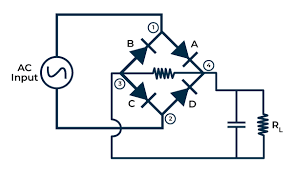 |
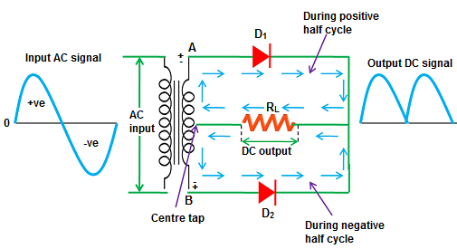 |
Uncontrolled Rectifier#
This rectifier uses diodes that conduct automatically when forward-biased. There is no control over the timing of conduction.
Applications:
Basic power supplies
Simple chargers
Controlled Rectifier#
Controlled rectifiers use thyristors (SCRs) or other controlled switches. The output can be regulated by adjusting the firing angle.
Advantages:
Adjustable output voltage
Suitable for motor speed control and industrial systems
Disadvantages:
Requires a control circuit
More complex design
Comparison of Converter Characteristics#
Converter Type |
Efficiency |
Ripple Level |
Control Capability |
Applications |
|---|---|---|---|---|
Half-Wave |
Low |
High |
No |
Simple, educational circuits |
Full-Wave |
Medium–High |
Medium |
No |
Household & industrial power supplies |
Single-Phase Controlled |
High |
Adjustable |
Yes |
Motor control, industrial chargers |
Three-Phase Controlled |
Very High |
Low |
Yes |
Heavy-duty industrial systems |
Chapter 5: explores the design and simulation of AC to DC converters#
import matplotlib.pyplot as plt
import schemdraw
import schemdraw.elements as elm
from schemdraw import dsp
with schemdraw.Drawing() as d:
d.push()
elm.Line()
tr = elm.Transformer().right().label('Transformer', loc='bot').anchor('p1')
elm.Line().length(d.unit/3).at(tr.s1)
elm.Line().length(d.unit/2).up()
elm.Line().right()
rec = elm.Rectifier().anchor('N').label('Rectifier')
d.pop()
elm.Gap().toy(tr.p2).label(['', 'AC IN', ''])
elm.Line().tox(tr.p1)
elm.Line().length(d.unit/3).at(tr.s2)
elm.Line().length(d.unit/2).down()
elm.Line().right()
elm.Line().toy(rec.S)
elm.Line().length(d.unit/8).at(rec.W).left()
lineRec = elm.Line().length(d.unit*1.3).down()
lineOne = elm.Line().at(rec.E).right().idot()
line = elm.Line().idot()
lineTwo = elm.Line().length(d.unit/3)
lineThree = dsp.Square().label('Regulator')
lineFour = elm.Line().length(d.unit/3)
lineFive = elm.Line().length(d.unit/2)
elm.Gap().toy(lineRec.end).label(['+', 'DC OUT', '–'])
lineFiveEnd = elm.Line().length(d.unit/2).left()
lineThreeEnd = elm.Line().tox(lineThree.S)
lineTwoEnd = elm.Line().tox(lineTwo.start)
lineEnd = elm.Line().tox(line.start).dot()
lineOneEnd = elm.Line().tox(lineOne.start)
elm.Line().tox(lineRec.end)
elm.Capacitor().endpoints(lineOne.end,lineOneEnd.start).label('Filter')
elm.Line().endpoints(lineTwoEnd.start,lineThree.S)
plt.show()
Chapter 6: Industrial Applications and Technological Advancements in AC to DC Converters#
AC to DC converters are not only fundamental in small electronic circuits but also play a vital role in many industrial systems. Their ability to convert alternating current (AC) to direct current (DC) makes them essential in power systems, manufacturing processes, and modern technologies.
Industrial Applications
Consumer Electronics and Telecommunications: Nearly all modern electronic devices – from computers to smartphones – require DC voltage, which is supplied through AC/DC power converters.
Automotive Industry: Electric and hybrid vehicles use AC to DC converters for charging batteries and powering internal electronic systems.
Control Systems and Automation: In industrial automation, devices like PLCs, sensors, and motor drives operate on DC power. Converters provide stable voltage for these control systems.
Industrial Power Supplies: Switch-mode power supplies (SMPS) in industrial applications rely on efficient AC to DC conversion for high-performance and energy-saving operations.
Technological Advancements
Recent technological developments have significantly improved the performance of AC to DC converters:
Advanced Semiconductor Materials (SiC, GaN) : These materials are used to build faster and more efficient power devices with lower losses.
High-Efficiency and Compact Designs : Modern converters are designed to be smaller, lighter, and more efficient, using advanced topologies and control methods.
Digital Control and Smart Features : Integration of microcontrollers and digital signal processing allows for smarter and more precise regulation of output voltage and current.
Chapter 7: Investigation of Challenges and Issues in AC to DC Conversion#
While AC to DC converters are essential in various applications, their design and operation face several challenges. These issues range from technical and design-related problems to efficiency concerns and safety risks.
Technical Challenges
Ripple Voltage:
Even after rectification, the output DC voltage is not completely smooth. Ripple can cause instability or malfunction in sensitive electronic circuits.
Voltage Drop in Diodes:
Every diode has a forward voltage drop (typically ~0.7V for silicon diodes), which reduces the overall efficiency, especially in low-voltage applications.
Heat Loss:
Power components such as regulators and diodes produce heat, and without proper thermal management, performance may degrade or components may fail.
Design and Economic Challenges
Size and Weight at High Power Levels:
High-power converters require large components like transformers or capacitors, increasing the size and weight of the system.
Cost of Advanced Components:
While using modern semiconductors like GaN or SiC improves performance, it significantly raises the design and production costs.
Complex Control Requirements:
Smart or digital AC/DC converters often require precise control algorithms and microcontrollers, making the system more complex to design and maintain.
Chapter 8: Conclusion#
The conversion of AC to DC is a fundamental process in modern electrical and electronic systems, with applications spanning from small electronic devices to large-scale industrial power systems. Throughout this research, we explored the principles, classifications, circuit analysis, industrial applications, and key challenges associated with AC to DC converters.
In conclusion, AC to DC conversion remains a vital field in electrical engineering, with continuous innovations driving progress toward higher efficiency, reduced environmental impact, and enhanced power management. Future research should focus on developing more efficient semiconductor devices, smart control algorithms, and hybrid energy solutions to further improve the performance of power conversion systems.
Refrences:#
Power Ponverter Circuits William shepherd Li zhang
https://www.rohm.com/electronics-basics/ac-dc-converters/acdc_what1